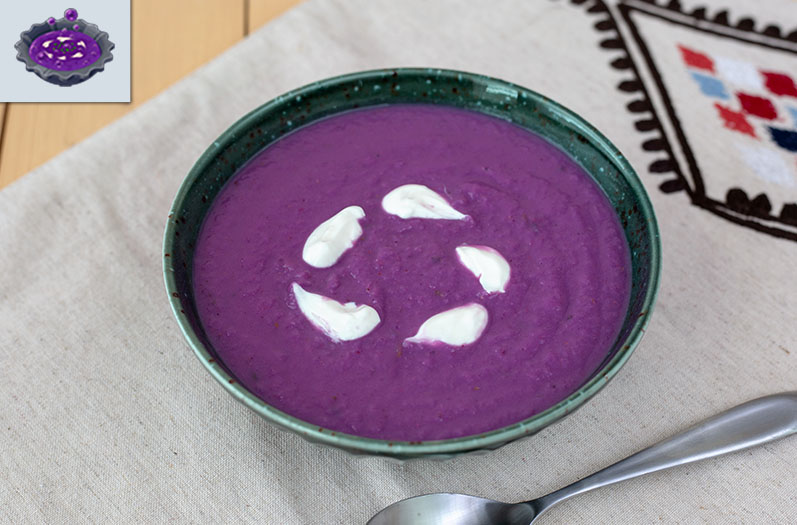

Monster Soup

Description
A notable dish of mysterious origin coming from the Legend of Zelda: Breath of the Wild.
Though the dish may not be of similar origin to the game, the taste will certainly
leave a taste that is just as memorable.
Ingredients
Monster Extract
- 2 oz blackberries
- 2 oz blueberries
- 2 tbsp pomegranate juice
- 1 tsp cayenne pepper
- 1/2 tsp fish sauce
- 1/2 cup coconut milk
Soup
- 2 small purple sweet potatoes
- 1/2 purple cauliflower, cut into large chunks
- canola oil
- 1 fennel bulb, top discarded and bulb chopped
- 1/2 onion, chopped
- 1/2 red onion, chopped
- 5 garlic cloves, chopped
- 1 tbsp dried thyme
- 2 tsp dried sage
- 2 cups vegetable broth
- 1 lime, juiced
- salt
- pepper
Garnish
- scallions (or chives)
- coconut cream
Steps
Monster Extract
- Combine all the ingredients in a blender. Transfer to an airtight container through a mesh
strainer. Store in the refrigerator until you are going to use it. This extract
will be fresh in the refrigerator for up to two weeks.
Soup
- Preheat an oven to 400°F. Take each of the sweet potatoes and stab them several times with
a fork. Wrap each of the sweet potatoes in aluminum foil and then place on a baking sheet.
Roast the sweet potatoes for 60 minutes.
- At about 40 minutes of the potatoes roasting, add the cauliflower to the baking sheet and
allow to roast for the remaining 20 minutes. Once the time has passed, set the cauliflower
to the side. Check if the sweet potatoes are done by piercing one with a knife. If it
inserts easily, it is ready. Otherwise, roast until it is soft enough.
- Heat a pot over medium heat and coat with canola oil. Add the fennel bulb, onion, red
onion, and garlic and cook until they are soft, about 8 to 15 minutes. Sprinkle the
softened vegetables with the thyme and sage. Add the roasted vegetables and vegetable broth
and bring to a slight boil. Lower heat and simmer for 10 minutes.
- Turn off the heat and transfer the contents in the pot into a blender and blend until smooth.
Return to the pot and turn on the heat to low. Add the monster extract and lime juice. Heat
until the soup has warmed all the way through. Season with salt and pepper to your liking.
Serve in a bowl topped with the garnishes.